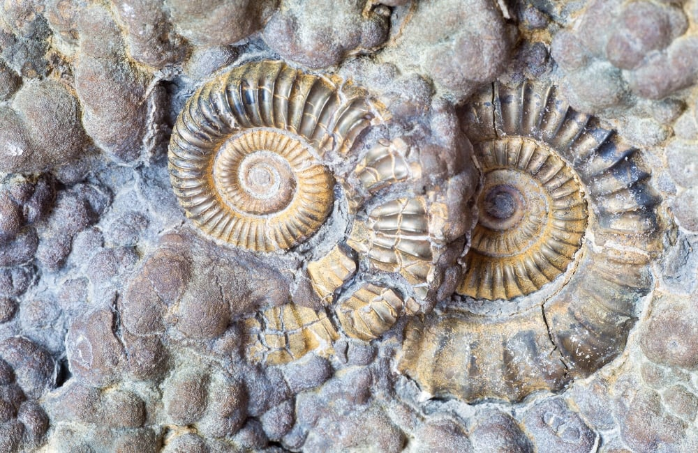
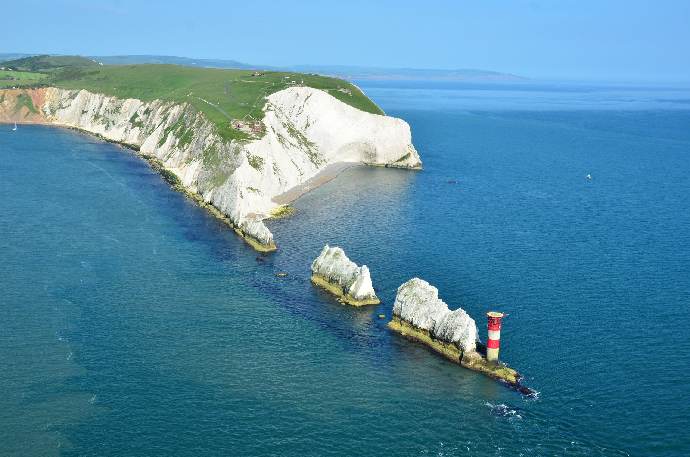

Bienvenue sur la page de l'Île de Wight !
Un lieu riche de paléontologie
L'île des dinosaures
Un musée paléontologique sur les dinosaures, dont certains
peuvent être trouvés sur l'île.

Des fossiles partout !
Des fossiles peuvent être trouvés sur l'île à même les plages.
L'on peut particulièrement trouver des fossiles d'ammonites mais
aussi des fossiles de ptérosaures !

Des formation rocheuses intéressantes
Les aiguilles
Les aiguilles sont des aiguilles rocheuses, ainsi qu'une falaise,
faites entièrement de craie.

Les sables arc-en-ciel
Les sables arc-en-ciel sont des sables de diverses couleurs
qui se trouvent tous sur une même falaise.